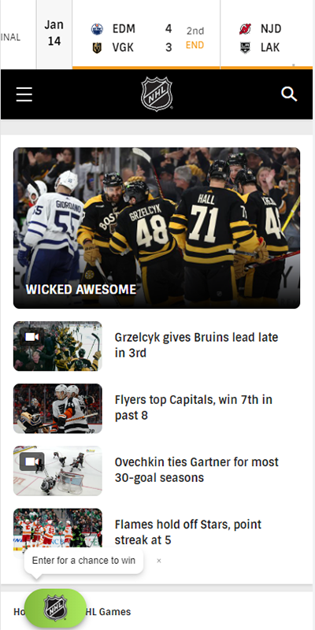
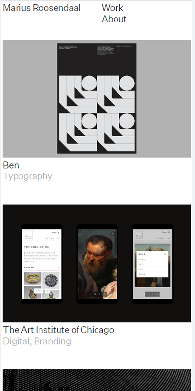

Brian Parker
NHL
nhl.com This is a good example of Alignment using the F style of scanning the viewport. This is a layout that is used for sites that are content heavy such as blogs or sites that are regularly updated width new information without removing the older content. It works well for this compact view of this National Hockey League site as they have ample content and a small viewport, moreso than other sites.
Green Chameleon
greenchameleondesignGreen Chameleon is a design and SEO site. I was searching for sites with good contrast and there were several ways to achieve contrast; through color, opacity, size, and many other examples. I chose this example because the contrast in coloring, the orange and green present a really blatant example of the concept.
Marius Roosendaal
marius.systems This is a photography website that does a good job of using repitition in layout to present content in a universal way that takes the attention away from the site design and focuses on the content. The effect is more of reading a book, all books are binded the same and the physical book itself is unastounding. The content is the focus here and this format does a good job of channeling the reader toward that content.